Motivation for Move Semantics
To understand the basic principles of move semantics, let’s look at the execution of a small piece of code. I’ve written a toy Vector class. I choose the manage the memory myself, so I will follow the rule of three. I will supply a copy-constructor, copy-assignment operator and a destructor. I have also overloaded operator+() to support element-wise addition of two vectors.
Value Semantics
Assume that we have the following program:
//basics/copy_semantics.cpp
#include <iostream>
#include <stdexcept>
#include <initializer_list>
template <typename T>
class Vector {
private:
int capacity_;
int size_;
T* ptr_;
public:
Vector() :capacity_{ 0 }, size_{ 0 }, ptr_{ nullptr } {}
Vector(int size) : capacity_{ size }, ptr_{ new T[size] }, size_{ size } {}
Vector(int size, T data) : Vector(size) {
for (int i{ 0 }; i < size; ++i)
ptr_[i] = data;
}
Vector(std::initializer_list<T> list) {
clear();
for (const T& elem : list)
push_back(elem);
}
//Destructor
~Vector()
{
clear();
}
//Copy constructor
Vector(const Vector& v)
{
if (this == &v)
return;
capacity_ = v.capacity_;
size_ = v.size_;
ptr_ = new T[v.size_];
for (int i{ 0 }; i < v.size_; ++i)
ptr_[i] = v.ptr_[i];
}
//Copy assignment operator
Vector<T>& operator=(const Vector<T>& v)
{
if (this != &v)
{
delete[] ptr_;
ptr_ = nullptr;
capacity_ = v.capacity_;
size_ = v.size_;
ptr_ = new T[capacity_];
for (int i{ 0 }; i < v.size_; ++i)
ptr_[i] = v.ptr_[i];
}
return *this;
}
T& operator[](int i)
{
if (i >= 0 && i < size_)
return ptr_[i];
else
throw std::out_of_range("Index out of bounds.");
}
T& operator[](int i) const
{
if (i >= 0 && i < size_)
return ptr_[i];
else
throw std::out_of_range("Index out of bounds.");
}
void reserve(int size)
{
if (size_ < capacity_) return;
if (ptr_ == nullptr)
{
size_ = 0;
capacity_ = 0;
}
T* bufferNew = new T[size];
unsigned int l_size = std::min(capacity_, size);
for (int i{ 0 }; i < l_size; ++i)
{
bufferNew[i] = ptr_[i];
}
if (ptr_ != nullptr)
delete[] ptr_;
ptr_ = bufferNew;
capacity_ = size;
}
void clear()
{
if (ptr_ != nullptr)
delete[] ptr_;
ptr_ = nullptr;
size_ = 0;
capacity_ = 0;
}
int size() const
{
return size_;
}
int capacity()
{
return capacity_;
}
void push_back(const T& elem)
{
if (size_ >= capacity_) {
reserve(capacity_ + 5); // Double the capacity
}
ptr_[size_++] = elem;
}
void pop_back()
{
--size_;
}
T front()
{
if (size_ > 0)
return ptr_[0];
else
throw std::out_of_range("Index out of bounds.");
}
T back()
{
if (size_ > 0)
return ptr_[size_ - 1];
else
throw std::out_of_range("Index out of bounds.");
}
T* getRawPointer()
{
return ptr_;
}
};
template <typename T>
Vector<T> operator+(const Vector<T>& v1, const Vector<T>& v2)
{
if (v1.size() != v2.size())
throw std::logic_error("Vector lengths must be equal.");
Vector<T> result;
for (int i{ 0 }; i < v1.size(); ++i)
result.push_back(v1[i] + v2[i]);
return result;
}
Vector<Vector<double>> createAndInsert()
{
Vector<Vector<double>> pts;
pts.reserve(3);
Vector<double> x{ 1.0, 1.0 };
pts.push_back(x);
pts.push_back(x + x);
pts.push_back(x);
return pts;
}
int main()
{
Vector<Vector<double>> result = createAndInsert();
return 0;
}Let us look at the individual steps of the program (inspecting both stack and the heap) when we compile this program with a C++ compiler.
First in main, we create the empty vector pts which will be used to store points in the euclidean space \(\mathbf{R}^2\):
Vector<Vector<double>> pts;which is placed on the stack as an object that has size_ = 0, capacity_ = 0 and no memory allocated for elements.
Then, we call
pts.reserve(3);This allocates memory for 3 elements on the heap. The member pts_->capacity_ equals 3, pts->size_ equals 0 and pts_->ptr_ contains the address to heap block. The allocated memory is not initialized, because the number of elements is still 0.
Then, we create a \(2\)-tuple to hold the cartesian coordinates of a point \((1.0,1.0)\). We create a Vector<double> initialized to {1.0,1.0}. Essentially, we create an object x on the stack with its members x->size_ = 2, x->capacity_ = 5 and a pointer x->ptr_ containing the address of newly allocated memory on the heap for 5 elements. Further, x->ptr_[0]=1.0, x->ptr_[1]=1.0.
Vector<double> x{1.0, 1.0};After this statement, the program has the following state: we have two objects on the stack : pts and x. Both of them have memory allocated on the heap.
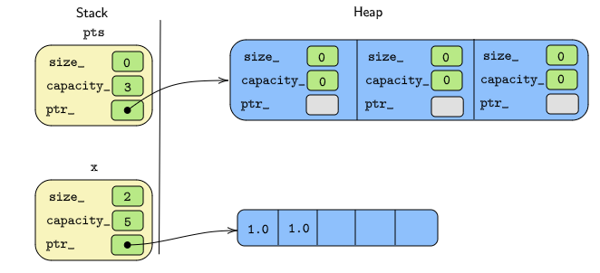
The next step is the command to insert x into the pts vector.
pts.push_back(x);My toy Vector class is said to have value semantics, which means it creates copies of the values passed to it. As a result, we get a first element in the vector, which is a full(deep) copy of the passed value/object x:
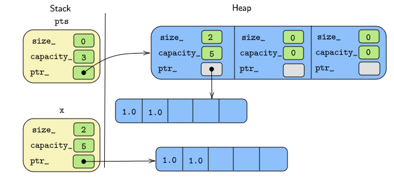
The current state is that we have a vector pts and two copies of x={1.0,1.0}, one of which is the first element in pts.
Let’s now look at the next statement, which creates a new temporary vector and again inserts it into the pts vector:
pts.push_back(x + x);This statement is performed in three steps:
Step 1. We create a temporary Vector<double> object x + x.
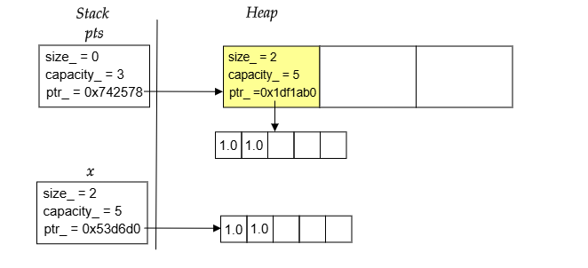
Step 2. x+x is a temporary. The Vector<T>::push_back(const T&) function accepts a reference-to-const as an argument. Since x+x is a temporary, it cannot be modified and binds to a reference-to-const. Moreover, being a temporary object, it is likely to die soon. Referencing it extends the lifetime of the temporary x + x={2.0,2.0}.
Now, the statement pts_[size++] = elem will invoke the copy-assignment operator on the yet uninitialized second element pts[1] which is of type Vector<double>. This will force a full (deep) copy of x + x={2.0,2.0}. At this time, two copies of {2.0,2.0} exist on the heap. One of these is assigned to pts[1].
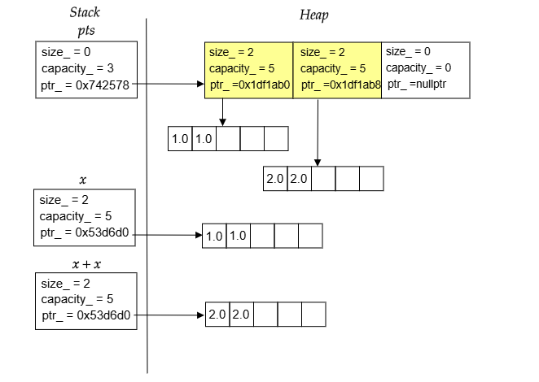
Step 3. When push_back(const T&) returns, the temporary x + x will die and its destructor is called and the memory allocated on the heap is freed. You can see this on cppinsights.
Our code is clearly not performing well: we create a copy of the temporary x + x and destroy the source of the copy immediately afterwards, which means we unnecessarily allocate and free memory that we could have just moved from source to the copy.
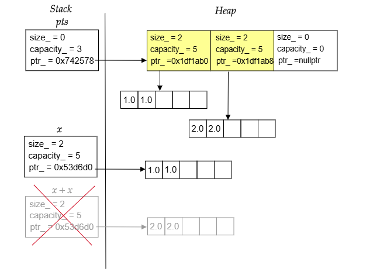
With the next statement, again we insert x into pts:
pts.push_back(x)Again, pts copies x.

This is also something to improve. Because the value of x is no longer needed, some optimization could use the memory of x as the memory for the new element instead.
At the end of createAndInsert() we come to the return statement:
return pts;Here, the behaviour of the program is a bit more complicated. We return by value (the return type is not a reference), which should be a copy of the value in the return statement. Creating a copy of pts means that we have create a deep copy of the whole vector with all of its elements. Thus, we have to allocate heap memory for the array of elements in the pts and heap memory for the value of each 2-tuple. Here, we would have to allocate memory 4 times.
However, since at the same time pts is destroyed because we leave the scope where it is declared, the compiler is allowed to perform named return value optimization (NRVO). This means that the compiler can generate code so that pts is used as the return value.
Let us assume that we have the named return value optimization. In that case, at the end of the return statement, pts simply becomes the return value and the destructor of x is called, which frees the memory allocated when it was declared.
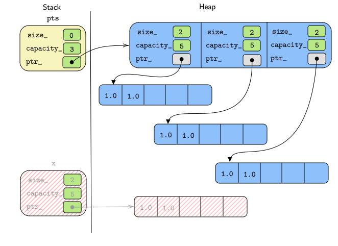
Finally, we come to the assignment of the return value to result:
result = createAndInsert()Here, we really get behavior that can be improved: the usual assignment operator has the goal of giving result the same value as the source value that is assigned. In general, any source(assigned) value should not be modified and should independent from the object that the value was assigned to. So, the assignment operator will create a deep-copy of the whole return value:
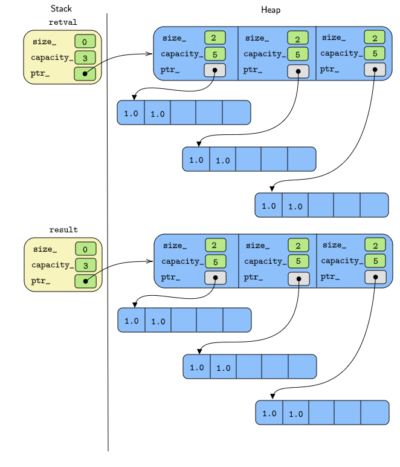
However, right after that we no longer need the temporary return value and we destroy it:
Again, we create a copy of a temporary object and destroy the source of the copy immediately afterwards, which means that we again unnecessarily allocate and free memory. This time it applies to four allocations
For the state of the program after this assignment in main(), we allocated memory numerous times and released it. Unnecessary memory allocations were caused by:
- Inserting a temporary object into
pts. - Inserting an object into
ptswhere we no longer need the value. - Assigning a temporary vector with all its elements.
We can more or less avoid these performance pennalties.
Copy elison
Copy-elison is based on the fact that the compiler is allowed to follow the as-if rule. The compiler is allowed to generate any code which has the same effect as the code you told it to add. The standard actually says, that if the compiler is told to copy something, but the copy is not really necessary, because the original is not going to be used again, then the compiler is allowed to elide(omit) the copy. The compiler is allowed to elide copies, where the results are as-if copies were made.
Consider the function below:
#include <cmath>
double discountFactor(double r, double t){
double result = exp(-r * t);
return result;
}
int main()
{
double df {discountFactor(0.05, 1.00)};
return 0;
}How many parameters are passed to the function discountFactor(double, double)? C++ programmers answer \(2\), assembly-language programmers answer \(3\). Why? At a low-level, when we have a return-value, we have to tell the generated code, where to put the return value. The function is passed the address where the results should be written.
Alright, so this is what’s going on. Our function main() is going to call discountFactor(double, double) in order to populate a local df. The stack frame for the function main() looks like this:
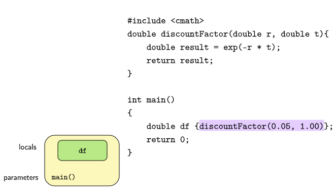
Now, we are going to call the function discountFactor(double, double). When we call discountFactor(double, double), we have to create the stack-frame for discountFactor(double, double).
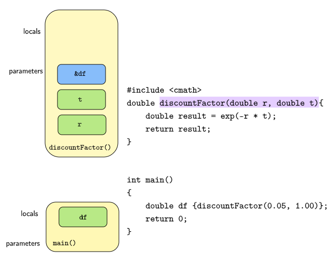
Okay, now we execute the function discountFactor(double, double) and now the return value is now stored directly at the address given by &df.

So, this is going to elide the copy. This form of copy elison is called Return Value Optimization(RVO). The calling function allocates space for the return value on the stack, and passes the address of that memory to the callee. The callee can then construct a return value directly into that space, which eliminates the need to copy from the inside to the outside.
Also, although the compiler is normally required to make a copy when a function parameter is passed by value (so modifications to the parameter inside the function can’t affect the caller), it is allowed to elide the copy, when the source is a temporary.
void f(std::string a)
{
int b{123};
//some code
return;
}
void g()
{
f(std::string("A"));
std::vector<int> y;
}This is how it actually works. We are going to create our temporary - the string "A" in the place, where we would have actually copied it, that is, in the local variable a in the stack frame of f(std::string).
Value Categories
In C++, every expression is either an lvalue or an rvalue. Consider an object that owns some resources(file-descriptors, sockets, memory buffer).
An lvalue denotes an object whose resources cannot be reused. The object is an lvalue, if you can’t take the guts(resources) out of this object and donate it to someone else. lvalues include expressions that designate objects by their name. For example, in the expression
double y = f(x),yis an lvalue. Moreover, lvalues have persistent storage and an identifiable memory address. For instance, if I declarestd::vector<double> v{1.0,2.0,3.0,4.0,5.0};, thenv[0]is an lvalue.An rvalue denotes an object whose resources can be reused. The object is an rvalue, if you can take the guts(resources) out of it and donate it to another object. rvalues typically include temporary objects as they can’t manipulated at the place they are created and are likely to be destroyed soon. For instance, if declare
int x = 5;,5is an rvalue. Moreover, in the statementdouble y = f(x);, the expressionf(x)is an rvalue.
Moving data
As seen earlier, C++ sometimes performs unnecessary copying.
cppinsights produces the following annotations:
Vector<double> x = Vector<double>();
const double __temporary179_5[10] = {
1.0, 2.0, 3.0, 4.0, 5.0,
6.0, 7.0, 8.0, 9.0, 10.0
};
const Vector<double> __temporary179_6 = Vector<double>(Vector<double>(std::initializer_list<double>{__temporary179_5, 10}));
x.operator=(__temporary179_6);
__temporary179_6.~Vector();
/* __temporary179_5 // lifetime ends here */In the above code snippet, the temporary vector of reals \(\{1.0,2.0,3.0,\ldots,10.0\}\) is copied element-wise to x and then destroyed immediately after. We’ve wasted a lot of energy in deep-copying.
Similarly, appending to a full vector causes much copying before the append. That is not what we want to do.
What we really want to do is, transfer the contents of __temporary19_6 vector to x in a very simple way. Firstly, we copy the pointers; we cannot stop there, because at this point there are two Vector<T> objects owning the same memory resource.

The second step is, of course to set the pointers of the temporary vector to nullptr.
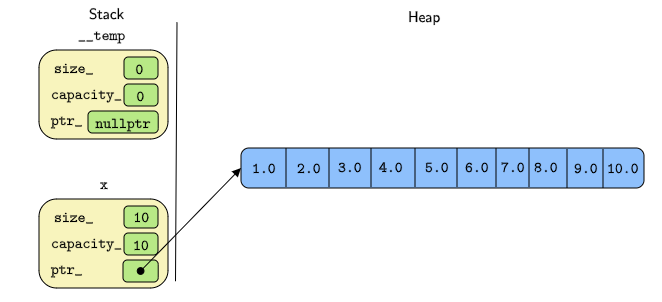
That looks great and this is cheap! We are doing the minimum amount of work to transfer the contents of the temporary into x.
At the end of the assignment operation, the temporary goes out of scope and the vector \(\{1,2,3,\ldots,10\}\) is in x. How do we implement this logic programmatically?
In addition to the copy-constructor, we write a move constructor. A move constuctor simply moves the data by taking ownership of the pointer that refers to the data, leaving the data itself where it resides.
// move constructor
Vector(Vector&& src) noexcept
{
// Just swap the memory pointers
std::swap(src, *this);
}rvalue references in detail
The constructor takes an argument of the type rvalue reference. rvalue references are declared two ampersands. lvalues bind to lvalue references. When taking a reference to a temporary object, an rvalue, you have two choices. rvalues can bind to:
- A
constlvalue reference. - A mutable rvalue reference.
const std::string& r1 {"hello"};
std::string& r2 {"world"};
const Vector<int>& r3 {1,2,3,4,5};
Vector<int>&& r4{6,7,8,9,10};All these references have the semantics of - we can steal/modify the resources of the object we refer to, provided the state of the object remains a valid state. Technically, these semantics are not checked by compilers, so we can modify an rvalue reference as we can do with any non-const object of the type. We might also decide not to modify the value.
And it’s a logic error to take a mutable lvalue reference to a temporary, so this is disallowed in the language:
// std::string& r1 = "hello"; //error: this is not possible
// r1 += "world";
// Vector<int>& r2 {1,2,3,4,5};
// r2.push_back(6);Assigning a temporary to a reference extends the lifetime of the temporary so that it matches the lifetime of the reference. So, this is legal:
int main()
{
{
const std::string& s = foo();
std::cout << s << std::endl; //the temporary to which s refers is still alive
}
//but now it's destroyed
return 0;
}And so is this:
rvalue references as parameters
When we declare a parameter to be an rvalue reference, it has exactly the behavior and semantics as introduced above:
- The parameter can only bind to a temporary object or an rvalue.
- According to the semantics of rvalue references:
- The caller claims that it is no longer interested in the object. Therefore, you can steal the guts of object, take ownership of its resources.
- However, the caller might still be interested in using the object. Therefore, any modification should keep the referenced object in a valid state.
std::move()
Hey, this is cool! Why don’t we apply these ideas to the below example?
Well, in this case, we would have a problem. v1 has a name, it has a persistent storage location and a memory address, it is an lvalue. You can’t steal the contents of v1.
But, we can do something about this. If indeed you are interested to transfer the contents of v1 into v2, then all we need to do is use std::move.
std::move() is a function that you can think of as performing an unconditional cast of its argument to an rvalue reference. std::move(v1) marks v1 to be movable. It does not physically move anything. It signals, that the object v1 may be moved from.
If you have an lvalue, an object for which the lifetime does not end when you use it, you can mark it with std::move() to express I no longer need this object here. std::move does not move; it only sets a temporary marker in the context where the expression is used:
void foo1(const std::string& lr); //binds to the passed object without modifying it
void foo1(std::string&& rv); //binds to the passed object and might steal/modify its contents
std::string s{"hello"};
foo1(s); //calls the first foo(), s keeps its value
foo1(std::move(s)); //calls the second foo(), s might lose its value
//semantically s no longer legal to accessObjects marked with std::move() can still be passed to a function that takes an ordinary const lvalue reference. Consider another code snippet:
void foo2(const std::string& lr); //binds to the passed object without modifying it
//no other overload of foo2()
foo2(s); // calls foo2(), s keeps its value
foos(std::move(s)) // calls foo2(), s keeps its value because we know that
// foo2() can't modify or take ownership of the contents of s.Semantically, s is still legal to access after the execution of the last line. Because there’s overload of foo2(const std::string&&), there is no ways its contents can be modified or transferred.
Note that, an object marked with std::move() cannot be passed to a non-const lvalue reference.
Header file for std::move()
std::move() is defined as a function in the C++ standard library. To use it, you have to include the header file <utility> where it is defined:
Implementation of std::move()
std::move() is nothing but a static_cast to an rvalue reference. You can achieve the same effect by calling static_cast manually as follows:
Therefore, we could also write:
Moved-from objects
After a std::move(), moved-from objects are not (partially) destroyed. They are still valid objects for which at least the destructor will be called. However, they should also be valid in the sense that they have a consistent state and all operations work as expected. The only thing you do not know is their contents.
Valid but unspecified state
The C++ standard library guarantees that moved-from objects are in a valid but unspecified state. Consider the following code:
After passing s with std::move() you can ask for the number of characters, print out the value, or even assign a new value. However, you cannot print the first character or any other character without checking the number of characters first:
#include <iostream>
#include <vector>
#include <string>
#include <utility>
int main()
{
std::string s{"hello"};
std::vector<std::string> coll{};
coll.push_back(std::move(s)); //keeps in a valid but unclear state
std::cout << "Contents of s : " << s << "\n"; //ok (don't know which value is written)
std::cout << "size : " << s.size() << "\n"; //ok (rites the number of characters)
// std::cout << "[0] = " << s[0] << "\n"; //error (potentially undefined behavior)
s = "new value"; // ok
return 0;
}stdout
Contents of s :
size : 0Reusing moved-from objects
We might wonder why moved-from objects are still valid objects and are not (partially) destroyed. The reason is that there are useful applications of move semantics, where it makes sense to use moved-from objects again.
For example, consider code where we read chunks of data from a network socket or read strings line-by-line from a file stream and move them into a vector:
std::vector<std::string> allRows;
std::string row;
while(std::getline(myStream, row)){ //read next line into row
allRows.push_back(std::move(row)); //and move it to somewhere
}Each time after we read a line into row, we use std::move() to move the value of row into the vector of all rows. Then, std::getline() uses the moved-from object row again to read the next line into it.
As a second example, consider a generic function that swaps two values:
template <typename T>
void swap(T& a, T& b)
{
T tmp{std::move(a)};
a = std::move(b); //assign new value to moved-from a
b = std::move(temp); //assign new value to moved-from b
}Here, we move the value of a into a temporary object to be able t move-assign the value of b afterwards. The moved-from object b then receives the value of tmp, which is the former value of a.
Code like this is used in sorting algorithms for example, sorting a vector of buy/sell orders in the order book by the bid/ask prices.
Move assignments of objects to themselves
The rule that moved-from objects are in a valid but unspecified state usually also applies to objects after a direct or indirect self-move.
For example, after the following statement, the object x is usually valid without its value being known:
The canonical move constructor and move assignment operator
Consider the below Widget class as an example. The canonical move constructor and move assignment operators are written as follows:
class Widget{
private:
int i;
std::string s{};
int* resource; // Owning pointer
public:
// Move constructor
Widget(Widget&& rhs) noexcept //Phase 1: member-wise swap
: i {std::move(rhs.i)}
, s {std::move(rhs.s)}
, resource{std::move(rhs.resource)}
{
rhs.resource = nullptr; // Phase 2: reset the move-from object
}
// Move assignment operator
Widget& operator=(Widget&& src)
{
delete resource; //Phase 1: Cleanup
std::swap(src, *this); //Phase 2: Member-wise move
src->resource = nullptr; //Phase 3: Reset
return *this;
}
Widget::Widget& operator=(Widget src);
}An owning-pointer such int* is special, and it has to be dealt with separately.
Raw pointers are bad (especially owning raw pointers). In this case, the declaration doesn’t indicate whether it points to an element or an array.
If instead, we have a smart-pointer, then what I can do is omit is phase 2.
class Widget{
private:
int i;
std::string s{};
int* resource;
public:
// Move constructor
Widget(Widget&& rhs) noexcept //Phase 1: member-wise swap
: i {std::move(rhs.i)}
, s {std::move(rhs.s)}
, resource{std::move(rhs.resource)}
{}
// Move assignment operator
Widget& operator=(Widget&& src)
{
std::swap(src, *this);
return *this;
}
Widget::Widget& operator=(Widget src);
}I would like to show you one more thing. The canonical copy assignment operator also doubles up as a move-assignment operator.
// Copy/Move assignment operator
Widget::Widget& operator=(Widget src) //Copy/move constructor called
{
std::swap(src, *this);
return *this;
}
int main()
{
Widget w1(5,"hello", new int(10)),
Widget w2 = w1; //copy/move assignment operator called
Widget w3 = std::move(w1); //copy/move assignment operator called
}In the assignment statement Widget w2 = w1;, first the copy constructor is called and the contents of w1 are copied to src, before the control enters the body of operator=(Widget). Whereas the assignment statement Widget w3 = std::move(w1) results in the invocation of the move constructor and the contents of w1 are transferred to w3 before we execute the body of the assignment operator.
Avoiding unnecessary std::move()
As we saw, returning a local object by value automatically uses move semantics if supported. However, to be safe, programmers might try to force this with an explicit std::move():
std::string foo()
{
std::string s;
// do something
// ...
return std::move(s); //Bad, don't do this
}Remember that std::move() is just a static_cast to an rvalue reference. Therefore, std::move is an expression that yields the type std::string&&. However, this no longer matches the return type and therefore disables return value optimization, which usually allows the returned object to be used as a return value. For types where move semantics is not implemented, this might even force the copying of the return value instead of just using the returned object as the return value.
Value categories in detail
To compile an expression or statement it does not only matter whether the involved types fit. For example, you cannot assign an int to an int, when on the left hand side of the assignment, an int literal is used.
For this reason, each expression in C++ has a value category. Besides the type, the value category is essential to decide what you can do with an expression.
Value categories since C++11
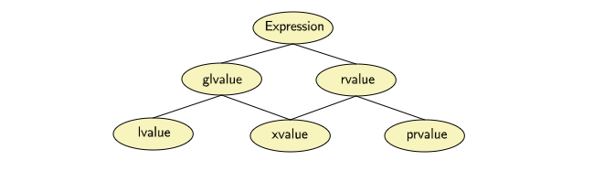
We have the following primary categories:
- lvalue (Locator Value)
- prvalue (Pure Readable Value)
- xvalue (Expiring Value)
The composite categories are: - glvalue (generalized lvalue) as a common term for lvalue or xvalue - rvalue as a common term for xvalue or prvalue
Intuitively, it’s easy to understand the primary value categories, if you look at the following diagram:
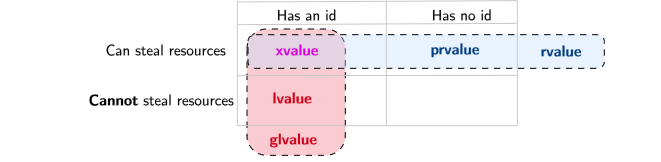
For example,
class X{
};
X v;
const X c;
f(v); //passes a modifiable lvalue
f(c); //passes a non-modifiable lvalue
f(X()); //passes a prvalue (old syntax of creating a temporary)
f(X{}); //passes a prvalue (new syntax of creating a temporary)
f(std::move(v)); //passes an xvalueRoughly speaking, as a rule of thumb:
- All names used as expressions are lvalues.
- All string literals used as expressions are lvalues.
- All non-string literals used as expressions are prvalues.
- All temporaries without a name (especially objects returned by value) are prvalues.
- All objects marked with a
std::moveare xvalues.
Copy Elison since C++17
C++17 added mandates to the standard, formally known as :
- Guaranteed copy elison
- Guraranteed return value optimization
- Copy evasion
If, in an initialization of an object, when the initializer expression is prvalue of the same class type as the variable type, copy elison is guaranteed.
#include <iostream>
class T{
public:
T(){ std::cout << "c'tor T()\n";}
T(const T& t){ std::cout << "c'tor T(const T& t)\n";}
T(T&& t){ std::cout << "c'tor T(T&& t)\n";}
};In C++17, this is equivalent to T x{};. The default constructor is invoked only once.
Similarly, if, in a return statement the operand is a prvalue of the same class type as the function return type, copy elison is guaranteed.
Under the rules of C++17, under the hood, a prvalue will be used only as unmaterialized recipe of an object, until actual materialization is required.
A prvalue is an expression whose evaluation initializes/materializes an object. This is called as temporary materialization conversion.
class T{
public:
T(){
std::cout << "c'tor T()\n";
}
//delete move and copy constructors
T(const T& other) = delete;
T(T&& other) = delete;
}
T make(){
//Creates the first temporary (pre C++17)
return T{};
}
int main(){
// Construct the second temporary (pre C++17)
// Copy/move temporary into N using the = operator (pre C++17)
T t = make();
return 0;
}Pre C++17, the function make() would construct a temporary within its scope. This temporary would then be copied/moved into another temporary within the main scope. Finally, the operator= would build t via copy/move construction. All of this temporary business would be elided by (RVO) by any decent compiler resulting in make() constructing a single object within t. However, this elison is somewhat optional, so the compiler must also demand that copy and move constructors exist, just in case. The above code does not compile with any pre C++17 compiler.
Post C++17, make() creates an object of type T within t. Avoiding excessive use of temporary objects is now a language feature and the reliance on compiler optimization is removed. The above code does compiler with a post C++17 compiler.
Value Categories since C++17
C++17 has the same value categories but clarified the semantic meaning of the value categories as described in the figure above.
The key approach for explaining value categories now is that in general, we have two major kinds of expressions:
- glvalues: expressions for locations of long-living objects or functions.
- prvalues: expressions for short-living values for initializations.
An xvalue is then considered a special location, representing a (long-living) object, whose resources/values are no longer needed.
Loosely speaking, prvalues themselves do not exist somewhere in memory, they do not denote objects. They are used for initialization. In C++17, prvalues are not moved from. It doesn’t make sense to talk about whether you can steal it’s resources.
Perfect Forwarding
Motivation for perfect forwarding
Consider a function that declares the parameter as rvalue reference:
As we’ve learned, we can only pass rvalues to this function:
std::string s{"hello"};
// f(s); // Error : passing an lvalue to an rvalue ref
f(std::move(s)); // okay, passing an xvalue
f(std::string("world"));// okay, passing a prvalueHowever, when we use the parameter s inside the function f(std::string&&), we are dealing with an object that has a name. This means that we use s as an lvalue. We can do only what we are allowed to do with an lvalue. This means that we cannot call our function recursively.
void f(std::string&& s)
{
// Do something
std::cout << "string s : " << s << "\n";
// f(s); // Error: passing an lvalue to an rvalue reference
}We have to mark s with std::move() again:
void f(std::string&& s)
{
// Do something
std::cout << "string s : " << s << "\n";
f(std::move(s)); // Ok, passing an xvalue
}This is the formal specification of the rule that move semantics is not passed through.
To forward an object that is passed with move semantics to a function, it not only has to be bound to an rvalue reference; you have to use std::move() again to forward its move semantics to another function.
For example:
class X{
// ...
};
//forward declarations
void foo(const X&); //for constant values (read-only access)
void foo(X&); //for variable values (out parameters)
void foo(X&&); //for values that are no longer used(move semantics)We have the following rules when calling these functions:
X v;
const X c;
foo(v); //calls foo(X&)
foo(c); //calls foo(const X&)
foo(X{}); //calls foo(X&&)
foo(std::move(v)) //calls foo(X&&)
foo(std::move(c)) //calls foo(const X&)Now, assume that we want to call foo() for the same arguments indirectly via a helper function callFoo(). That helper function would also need the three overloads.
void callFoo(const X& arg){ //arg binds to all const objects
foo(arg); //calls foo(const X&)
}
void callFoo(X& arg) //arg binds to lvalues
{
foo(arg); //calls foo(&)
}
void callFoo(X&& arg){ //arg binds to rvalues
foo(std::move(arg)); //needs std::move() to call foo(X&&)
}In all cases, arg is used as an lvalue (being an object with a name). The first version forwards it as a const object, but the other two cases implement two different ways to forward the non-const argument.
- Arguments declared as lvalue references (that bind to objects that do not have move semantics) are passed as they are.
- Arguments declared as rvalue references (that bind to objects that have move semantics) are passed with
std::move.
This allows us to forward move semantics perfectly: for any argument that is passed with move semantics, we keep the move semantics; but we do not add move semantics when we get an argument that does not have it.
Only with this implementation is the use of callFoo to call foo transparent.
X v;
const X c;
callFoo(v); //calls foo(X&)
callFoo(c); //calls foo(const X&)
callFoo(X{}); //calls foo(X&&)
callFoo(std::move(v)) //calls foo(X&&)
callFoo(std::move(c)) //calls foo(const X&)Remember that an rvalue passed to an rvalue reference becomes an lvalue when used, which means that we need std::move() to pass it as an rvalue again. However, we cannot use std::move() everywhere. For the other overloads, using std::move() would call the overload of foo() for rvalue references when an lvalue is passed.
For perfect forwarding in generic code, we would always need all these overloads for each parameter. To support all combinations, this means having \(3^2 = 9\) overloads for \(2\) generic arguments and \(3^3 = 27\) overloads for \(3\) generic arguments.
Therefore, C++11 introduced a special way to perfectly forward without any overloads but still keeping the type and the value category.
Implementing perfect forwarding
To avoid overloading functions for parameters with different value categories, C++ introduced the mechanism of perfect forwarding. You need three things:
- Take the call parameter as a pure rvalue reference (delcared with
&&but withoutconstorvolatile) - The type of the parameter has to be a template parameter of the function.
- When forwarding the parameter to another function, use a helper function called
std::forward<>()which is declared in<utility>.
You have to implement a function that perfectly forwards an argument as follows:
std::forward<>() is defined as a conditional std::move(), so that we get the same behavior as the three (or four) overloads of callFoo() above:
- If we pass an rvalue to
arg, we have the same effect as callingfoo(std::move(arg)). - If we pass an lvalue to
arg, we have the same effect as callingfoo(arg).
What exactly is happening here, is pretty tricky and needs a careful explanation.
Universal and Forwarding references
First note that we declare arg as an rvalue reference parameter:
This might give the impression that the rules of rvalue references apply. However, that is not the case. An rvalue reference (not qualified with const or volatile) of a function template parameter does not follow the rules of ordinary rvalue references. It is a different thing.
Two terms : Universal and Forwarding Reference
Such a reference is called a universal reference. Unfortunately, there is also another term for it that is mainly used in the C++ standard: forwarding reference. There is no difference between these two terms, it is just that we have a historical mess here with two established terms that mean the same thing. Both terms describe basic aspects of universal/forwarding references:
- They can universally bind to objects of all types(
constand non-const) and value categories. - They are usually used to forward arguments; but note that this is not the only use (one reason for me to prefer the term universal reference)
Universal references bind to all value categories
The important feature of universal references is that they can bind to objects and expressions of any value category:
template<typename T>
void callFoo(T&& arg); //arg is universal/forwarding reference
X v;
const X c;
callFoo(v); //ok
callFoo(c); //ok
callFoo(X{}); //ok
callFoo(std::move(v)); //ok
callFoo(std::move(c)); //okIn addition, they preserve the const-ness and value category (whether we have an rvalue or an lvalue) of the object they are bound to:
#include <iostream>
#include <type_traits>
class Widget{};
template <typename T>
void f(T&& arg){
std::cout << std::boolalpha;
if (std::is_same<T&&, Widget&>::value)
{
std::cout << "T&& = Widget&\n";
}
else if (std::is_same<T&&, const Widget&>::value)
{
std::cout << "T&& = const Widget&\n";
}
else if(std::is_same<T&&, Widget&&>::value)
{
std::cout << "T&& = Widget&&\n";
}
else if(std::is_same<T&&,const Widget&&>::value)
{
std::cout << "T&& = const Widget&&\n";
}
}
int main()
{
Widget w;
const Widget cw;
std::cout << "Calling f(w)\n";
f(w);
std::cout << "Calling f(cw)\n";
f(cw);
std::cout << "Calling f(std::move(w))\n";
f(std::move(w));
std::cout << "Calling f(std::move(cw))\n";
f(std::move(cw));
return 0;
}stdout:
Calling f(w)
T&& = Widget&
Calling f(cw)
T&& = const Widget&
Calling f(std::move(w))
T&& = Widget&&
Calling f(std::move(cw))
T&& = const Widget&&By rule, the template parameter type T, is deduced to be:
- An lvalue reference if we pass an lvalue.
- An rvalue reference if we pass to an rvalue.
Note that, a generic rvalue reference that is qualified with const (or volatile) is not a universal reference.
The rules of reference collapsing are now applied:
Widget& &&becomesWidget&Widget&& &becomesWidget&Widget& &&becomesWidget &Widget&& &&becomesWidget&&
In the function call f( w ), we are passing an lvalue, so the template parameter T is deduced to be an lvalue reference, Widget&. Therefore, T&& is Widget& && and by the rules of reference collapsing, this collapses to Widget&.
Similarly, in the function call f( Widget{} ), we are passing an rvalue, so the template parameter T is deduced to be an rvalue reference, Widget&&. Therefore, T&& is Widget&& && which collapses to Widget&&.
std::forward<>()
std::forward<>() conditionally casts its input into an rvalue reference.
- If the given input expression is an lvalue, it is cast to an lvalue reference.
- If the given input expression is an rvalue, it is cast to an rvalue reference.
std::forward does not forward anything.
A really cool use-case of perfect forwarding is the std::make_unique() function. std::make_unique<T>() must invoke the underlying constructor. However, whilst doing so, it must preserve the const-ness and the value category of the arguments passed to the constructor.
Here is a quick code snippet:
// Let's say that we would like to implement the make_unique()
// function that invokes the underlying constructor - either move
// or copy based on the arguments
#include <memory>
#include <iostream>
class X{
public:
X(){}
X(const X& x){ std::cout << "copy c'tor\n";}
X(X&& x) { std::cout << "move c'tor\n"; }
};
template<typename T, typename... Args>
std::unique_ptr<T> make_unique(Args&&... args){
T* ptr_t = new T(std::forward<Args>(args)...);
return std::unique_ptr<T>(ptr_t);
}
int main()
{
X x1{};
std::unique_ptr<X> x2{make_unique<X>(x1)}; //calls X(const X&)
std::unique_ptr<X> x3{make_unique<X>(X{})}; //calls X(X&&)
return 0;
}